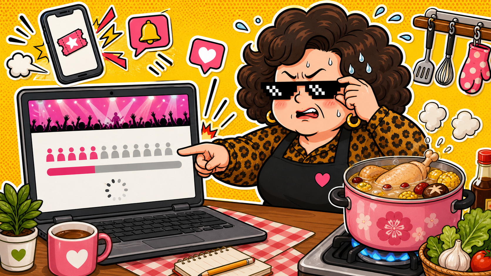

娛樂熱點 · 真實事件整理
五月天大巨蛋搶票：手指比腦袋還早排隊。
演唱會門票一開賣，很多人不是在買票，是在測試自己家的 Wi-Fi、信用卡額度和脾氣上限。
上圖為 AI 生成情境圖，不是新聞現場照片。
阿姨一句話：搶票這件事，表面上是娛樂，實際上是全民情緒管理課。
根據 NOWnews 報導，五月天「#5525+2 回到那一天」25 週年巡迴在 2026 年 7 月重返台北大巨蛋，規劃 7 場演出，門票在 2026 年 5 月 23 日開賣，並有親子套票、玉山卡友專區與全區開賣等不同購票階段。
這種新聞為什麼大家會想看？因為它不是只有粉絲的事。它其實很像現代人的生活縮影：提前登入、手機驗證、信用卡付款、限時完成、不能按上一頁。每一個步驟都像在問你：「你今天心臟夠強嗎？」
阿姨看到的重點
- 熱門票不是用買的，是用準備和一點運氣換來的。
- 搶票前先把手機驗證、會員登入、付款方式弄好，不要等倒數才開始找密碼。
- 如果系統卡住，不要邊罵邊亂按。亂按一通，票沒有變多，血壓倒是有。
阿姨碎念版
以前排隊是站在百貨公司門口，現在排隊是坐在電腦前面刷新。不同的是，以前你會看到前面還有幾個人；現在你只看到一個圈圈在轉，轉到你開始懷疑人生。
所以阿姨建議：搶票當天不要煮需要顧火的湯，不要同時跟家人吵架，也不要開十個分頁假裝自己是機房。先喝水，先登入，先接受命運。搶到是緣分，沒搶到至少湯不要燒焦。